Building a Plant Layout¶
Summary: How to create, arrange, and connect process blocks on the Layout Sheet to represent a wastewater treatment plant in WEST.
Source: WEST User Guide, Chapter 5.2.
Prerequisites: The WEST Interface
Overview¶
A plant layout is built by placing Blocks (unit-process models) on the Layout Sheet, then connecting them with Connections that carry the wastewater vector or control signals between them. The steps below take you from an empty sheet to a fully wired layout.
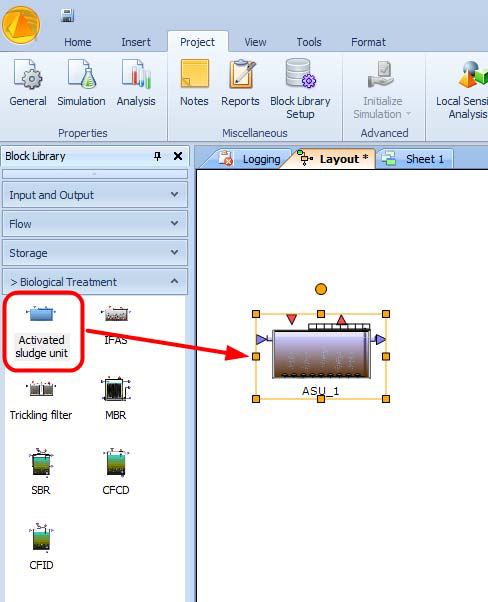
Step 1 — Place a block¶
- Open the Block Library panel (left side of the screen).
- Browse or search for the block type you need (e.g. a CSTR bioreactor, a settler).
- Drag the block icon from the Block Library and drop it onto the Layout Sheet.
The block appears with its default icon, label, and terminals.
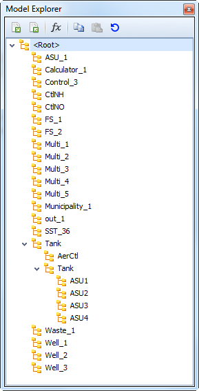
Step 2 — Assign the block to a layer¶
Layers let you show or hide groups of blocks and keep complex layouts organised.
- In the Layers panel, enable (click) the target layer before dropping the block. The block will be placed on whichever layer is currently active.
- Alternatively, after placing the block, open the Properties pane, click the ellipsis (…) button next to the Layer property (the Layers Picker), and select the desired layer.
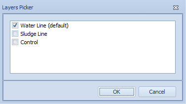
Step 3 — Rename a block¶
A block has two distinct name fields:
| Field | Purpose | Rules |
|---|---|---|
| DisplayName | The label shown on the Layout Sheet | Any text, including spaces |
| Name | The internal unique identifier used in expressions and variable paths | Letters and digits only — no spaces or special characters |
To rename:
- Via the Properties pane: select the block → edit the DisplayName property in the Properties window.
- Via right-click: right-click the block → Edit Label → type the new display name.
Always set a meaningful Name early; changing it later requires updating any expressions that reference it.
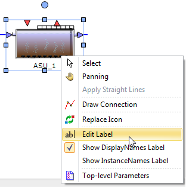
Step 4 — Resize a block¶
- Click to select the block. Eight resize handles (light-blue dots) appear at the corners and mid-edges.
- Drag any handle to resize. The icon scales proportionally by default.
The larger dark-blue dot above the block is the rotation handle, not a resize handle — see Step 5.
Step 5 — Rotate a block¶
- Free rotation: drag the dark-blue rotation handle (above the selected block) to any angle.
- Fixed rotation (90°/180°/270°): use Format menu → Rotate and choose the desired fixed angle.
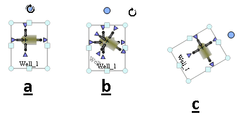
Step 6 — Flip a block¶
Use Format menu → Flip Horizontal or Flip Vertical to mirror the block icon. This is useful when you want inlet terminals on the left and outlet terminals on the right regardless of the default icon orientation.
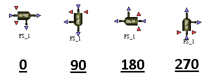
Step 7 — Replace a block's icon¶
To change the visual appearance without affecting the underlying model:
- Right-click the block → Replace Icon.
- Choose one of two options:
- Create a new square icon with the same terminals as the current icon.
- Pick from IconLib — browse the icon library for a compatible icon (one with matching terminal positions).
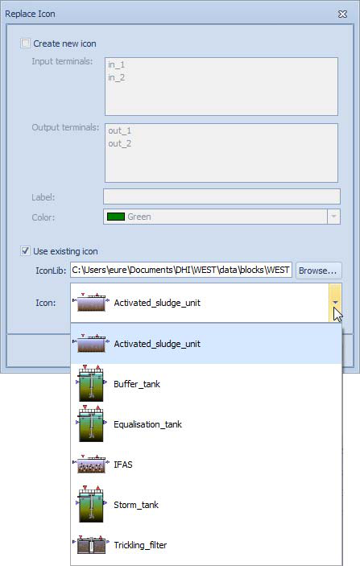
Step 8 — Replace a block's model¶
To swap the underlying process model while keeping the block's position and existing connections:
- Drag a different block from the Block Library and drop it onto the existing block on the Layout Sheet.
- WEST compares the terminal interfaces. If the interfaces match, all existing connections are preserved.
- If the interfaces differ, WEST warns you which connections will be lost.
You can also change the model via: select the block → Properties window → ClassName property → choose from the dropdown.
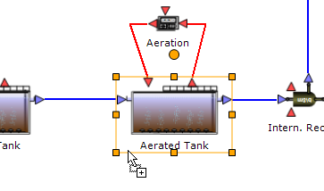
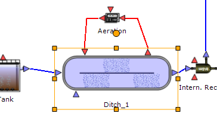
Step 9 — Connect two blocks¶
- From the Insert | Connections menu (or right-click context menu on the Layout Sheet), choose Polyline or Orthogonal connection mode.
- Hover over the source block. Connection points highlight.
- Click the starting terminal (connection point).
- Extend the connection to the destination block:
- Polyline: release the mouse and move it toward the target; click intermediate points to add corners; click the destination terminal to finish.
- Orthogonal: hold the mouse button and drag to the target terminal; release to finish. WEST routes the connection with right-angle bends automatically.
- To add a bend/anchor point to an existing connection: Ctrl+Shift+click on the connection line.
- To exit connection mode without completing a connection: right-click → Select, or use Home | Editing → Select.
After a successful connection an Interface Link dialog may appear. Use it to map variables between the two terminals (for example, mapping a sensor output to a controller's measured-variable input). Double-click any connection line later to review or modify its Interface Links.
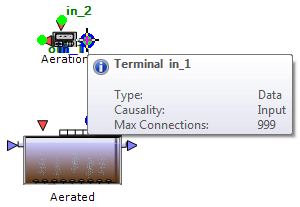
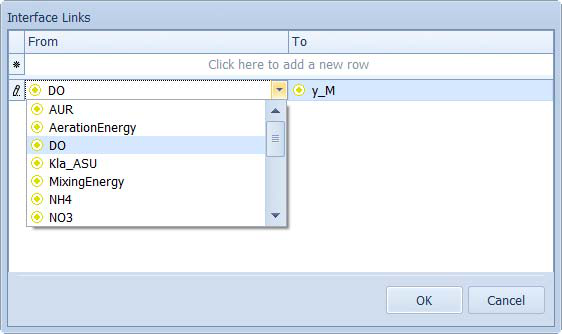
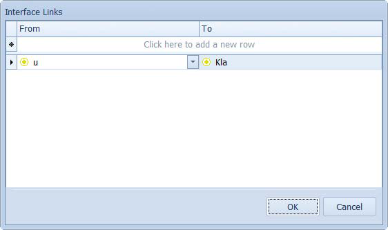
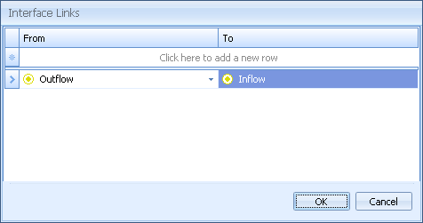
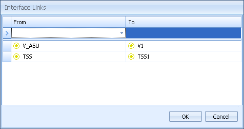
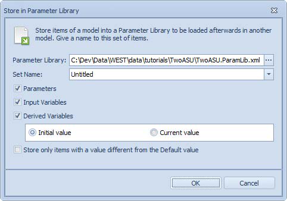
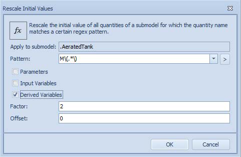
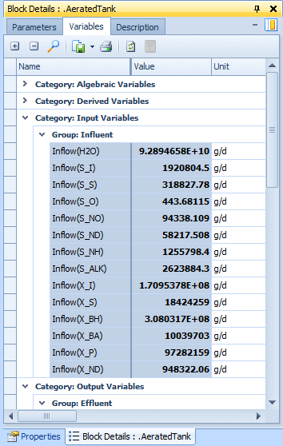
Step 10 — Align blocks¶
Clean alignment makes layouts easier to read. WEST offers several tools:
- Format menu alignment options: Horizontal Terminals, Vertical Terminals, Top, Middle, Bottom, Left, Center, Right.
- Select multiple blocks first (hold Shift and click, or drag a selection rectangle), then choose an alignment option.
- Arrow keys move the selected block(s) in discrete grid steps.
- Shift + arrow keys move in 1-pixel steps for fine positioning.
Step 11 — Change a block's model class¶
If you want to try a different model variant for a block (for example, switching from ASM1 to ASM2d) without dragging a new block from the library:
- Select the block.
- In the Properties window, find the ClassName property.
- Click the dropdown and choose the new model class from the list of compatible classes.
Existing parameter values and connections are retained where the new class has matching parameters and terminals.
Step 12 — Configure block parameters¶
After placing and connecting blocks, configure their parameters in the Block Details window.
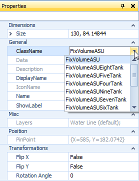
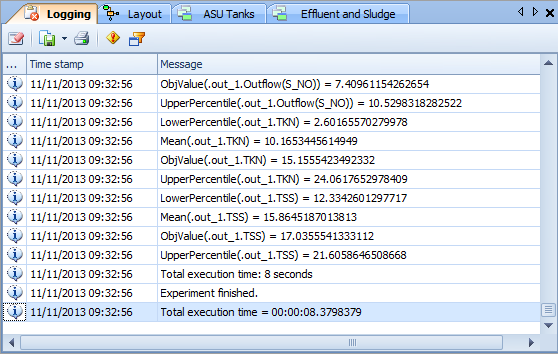
Step 13 — Define Top-Level Parameters¶
Top-Level Parameters group values that are shared across multiple blocks (e.g. a single temperature or kinetic coefficient applied to many CSTRs).
Manual creation:
- Click on the Layout Sheet background (no block selected).
- Right-click → Top-Level Parameters.
- Add a new row and fill in the properties:
| Property | Description |
|---|---|
| Name | Unique identifier (letters and digits only) |
| Type | Data type (Real, Integer, Boolean, …) |
| Description | Optional free text |
| Unit | Physical unit |
| Default Value | The shared value |
| Group | Organises parameters in Block Details |
| Lower / Upper Bound | Validity limits |
| Links | The sub-model parameters this top-level parameter controls |
Easy Create (recommended for existing models):
- Select one or more blocks that share a common parameter (e.g. several CSTR units).
- In Block Details, the common parameters are highlighted.
- Select the parameters you want to promote.
- Click Easy Create Parameters.
- Confirm the parameter names and links in the dialog. WEST creates the top-level parameters and automatically links them to the selected sub-model parameters.
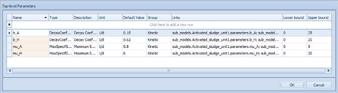
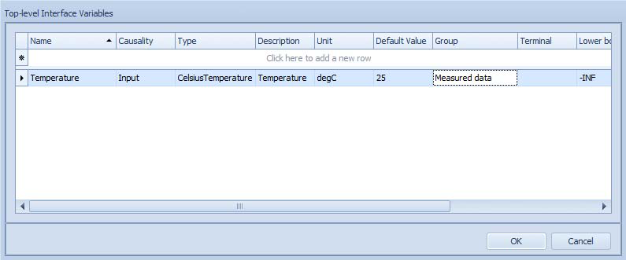
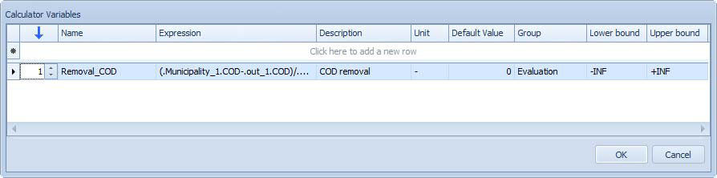
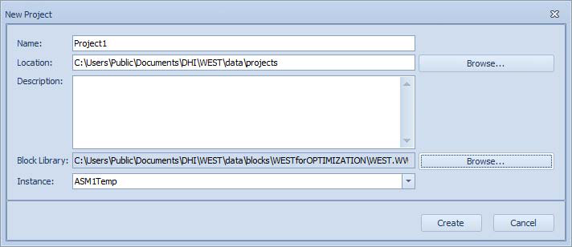
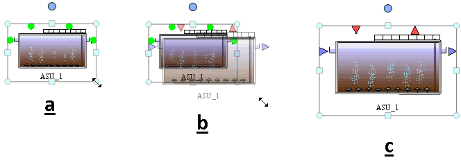